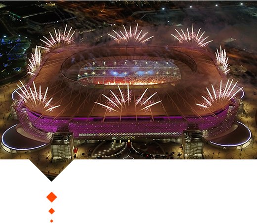

Os Estádios
Confira os estádios que sediaram os jogos do grupo F
Al-Rayyan

- Localização: Catar
- Capacidade: 60 mil pessoas
- Inauguração: 2003
Al-Bayt
- Localização: Al Khor
- Capacidade: 60 mil pessoas
- Inauguração: 2020
Ras Abu Aboud
- Localização: Doha
- Capacidade: 40 mil pessoas
- Inauguração: 2021
Ir para a página 5